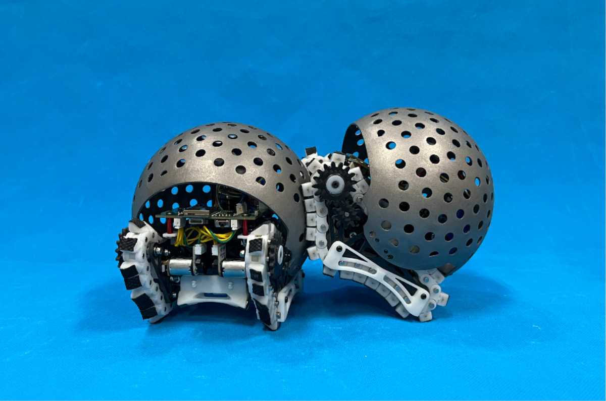

Peiqi WANG
Email: wangpeiqi00@gmail.com
About
I am currently interning in Department MakerWorld at BamBu Lab as a Mechanical Design Intern. I am also a master's student at The Chinese University of Hong Kong,Shenzhen, majoring in Computer and Information Engineering. I am conducting research on modular self-reconfigurable robots in the Freeform Robotics Lab under the supervision of Professor Tin Lun LAM. I received my bachelor's degree in Mechanical Design, Manufacturing and Automation from Harbin Institute of Technology, Shenzhen.
Publications
Peiqi Wang, Guanqi Liang, Da Zhao, Tin Lun Lam, “Enhancing Connection Strength in Freeform Modular Reconfigurable Robots through Holey Sphere and Gripper Mechanisms,” in 2025 IEEE International Conference on Robotics and Automation (ICRA). IEEE, 2025, pp. 7923-7929.
paperResearch
SnailBot
SnailBot is a bionic snail-inspired robot. This version of SnailBot adopts an adaptive spherical gripper structure to enhance inter-module connections and employs a rigid magnetic track as the locomotion mechanism, which also provides a fundamental guarantee for reliable connections between SnailBot modules.


球面运动演示视频
以下视频展示了SnailBot在球面环境中的运动与连接效果。
Project
SnailBot
一种采用磁轨驱动系统的模块化机器人，可在球面表面自由移动并进行自重构操作。

球面运动演示视频
以下视频展示了SnailBot在球面环境中的运动与连接效果。